4.4. Honeypot
1. ¿Qué es un Honeypot?
Un honeypot es, como su nombre indica, un tarro de miel, es decir, sistemas trampa o señuelo.

Son herramientas (software / hardware) que simulan ser equipos vulnerables con el objetivo de atraer ataques sin ningún riesgo, para registrar la actividad y analizarla, bien en tiempo real para generar alertas, o bien posteriormente para aprender que tipos de ataques se sufren en los equipos/red, para mejorar la seguridad de la organización y evitar que vuelvan a producirse ataques similares.
En sus inicios fueron desarrollados para simular entornos de red básicos (TI), poco a poco se han ido ampliando y hoy en día existen de todo tipo, incluso para redes industriales (TO). Se pueden implementar de manera individual o de forma conjunta, como una red de Honeypots que pueden llegar a simular entornos complejos y completos, estas redes reciben el nombre de Honeynets y son una herramienta fundamental para recabar información sobre los tipos de ataques que reciben las organizaciones.
Existen una gran cantidad de ejemplos y soluciones que se pueden probar, correctamente configurados, son una herramienta más para evaluar la seguridad de nuestro entorno y recopilar información que ayude a responder ante posibles ataques, pero hay que tener en cuenta que requieren mantenimiento, por lo que habrá que introducirlos en los planes internos como parte de la infraestructura TIC para tenerlos actualizados y que sea una herramienta útil.
Los Honeypot sirven como herramienta didáctica.
2. Tipos de Honeypot
Existen varios tipos de honeypot:
- De producción: señuelo que simulan ser lugares legítimos y vulnerables.
- De research: utilizada para fines educativos y para mejorar la seguridad.
- Físico: integra un equipo físico exclusivo que se incluye en nuestra red con su propia IP.
- Virtual: sistema virtual incluido en un equipo que mediante la virtualización consigue los recursos como si se tratase un equipo físico más.
- De baja interacción: Simula una serie de servicios más comunes a la hora de ser atacados. Su función es recopilar datos de ataques pasivos como botnets.
- De alta interacción: utiliza máquinas virtuales vulnerables aisladas del resto de la red para hacer creer al atacante que puede acceder a toda la red.
3. Honeypot SSH
En esta apartado se describe cómo realizar la instalación de un honeypot de baja interacción de un servicio SSH como es Cowrie con la finalidad de crear listas negras contra los atacantes y contra los empleados desleales que intenten comprometer nuestro sistema.
Para ello, se hará uso de un Ubuntu Server 20.04 en el cual se instalará docker. Seguidamente se descargará el docker de Cowrie y se hará uso de él. Para la ejecución de los distintos comandos, se hace uso del usuario administrador que pertenece a los grupos sudo y adm.
3.1 Instalación y Uso
En primer lugar, se aborda la instalación de docker, para ello, hay que actualizar los paquetes del equipo Ubuntu Server.
administrador@orion:~$ sudo apt update
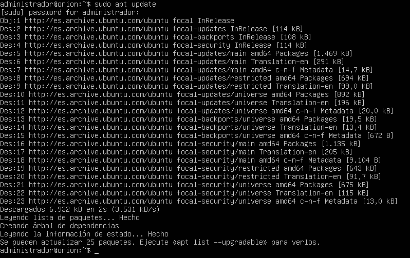
Figura 1. Actualización de los repositorios.
Una vez actualizado, se van a instalar las dependencias necesarias para instalar Docker.
administrador@orion:~$ sudo apt install \
> apt-transport-https \
> ca-certificates \
> curl \
> gnupg \
> lsb-release
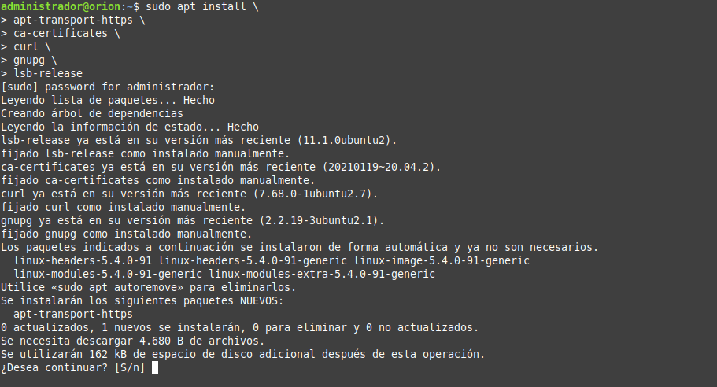
Figura 2. Instalación de las dependencias necesarias.
A continuación, hay que añadir la clave GPG de Docker.
administrador@orion:~$ curl -fsSL https://download.docker.com/linux/ubuntu/gpg | sudo gpg --dearmor -o /usr/share/keyrings/docker-archive-keyring.gpg
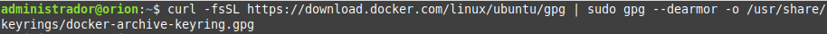
Figura 3. Añadir la clave GPG de Docker.
A continuación, hay que agregar el repositorio de Docker en la lista de repositorios del equipo:
administrador@orion:~$ echo \
> "deb [arch=amd64 signed-by=/usr/share/keyrings/docker-archive-keyring.gpg] https://download.docker.com/linux/ubuntu \
> $(lsb_release -cs) stable" | sudo tee /etc/apt/sources.list.d/docker.list > /dev/null
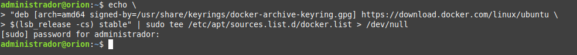
Figura 4. Agregar el repositorio de Docker en la lista de repositorios del equipo:
El siguiente paso es actualizar de nuevo los paquetes para que se pueda instalar Docker y seguidamente se instala:
administrador@orion:~$ sudo apt update
administrador@orion:~$ sudo apt install docker-ce docker-ce-cli containerd.io
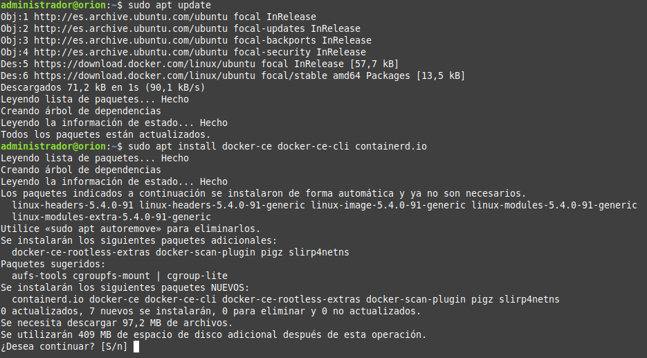
Figura 5. Actualización de los repositorios.
Una vez instalado, se puede verificar con el comando docker ps:
administrador@orion:~$ sudo docker ps
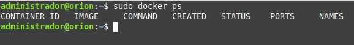
Figura 6. Verificar docker.
Instalación y uso de Cowrie
A continuación, hay que descargar el docker de Cowrie.
administrador@orion:~$ sudo docker pull cowrie/cowrie
| 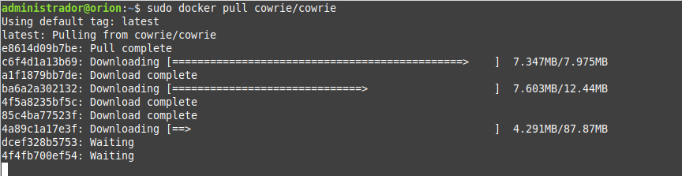 | 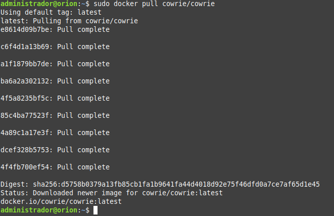 |
| Figura 7. Descarga del docker de Cowrie. | |
Una vez descargado el docker, hay que arrancar un contenedor con Cowrie de forma desatendida (-d) y utilizando el puerto 2222 (-p 2222:2222), ya que el 22 actualmente está en uso por el servidor SSH común. Evidentemente esto es un caso práctico para ver su funcionamiento, pero en una situación real, sería utilizar el puerto 22 para atraer el mayor número de atacantes.
administrador@orion:~$ sudo docker run -p 2222:2222/tcp cowrie/cowrie
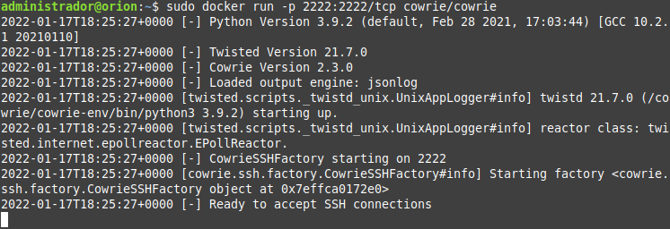
Figura 8. Arrancar un contenedor con Cowrie.
A continuación, con el comando docker ps, se comprueba que se ha arrancado correctamente y se obtiene el estado, imagen, nombre, etcétera.
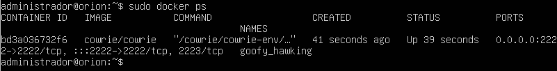
Figura 9. Verificar el contenedor que se ha puesto en marcha.
Ahora que ya está levantado el contenedor, se puede acceder a este supuesto servidor SSH. Para ello, hay que escribir cualquier contraseña para acceder a este servidor.
administrador@orion:~$ ssh -p 2222 root@localhost
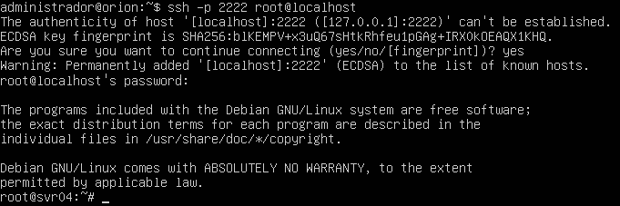
Figura 10. Acceso al honeypot (supuesto servidor ssh).
Se puede comprobar que se puede utilizar cualquier comando que se utilizaría en Linux, incluso acceder al /etc/shadow/ que se mostrará información ficticia.
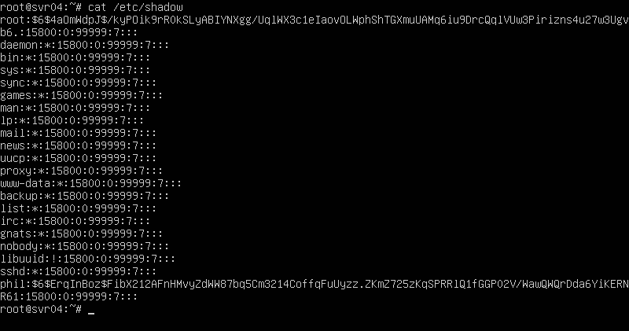
Figura 10. Listar el fichero shadow ficiticio.
4. Conclusiones
Como resumen, se destaca que el uso de un honeypot como cowrie ayuda a levantar servicios como señuelo, en este caso un servicio SSH con la intención de detectar ataques de fuerza bruta. Una vez instalado y comprobar que funciona, se puede ver la información de los ataques que se ha recibido.
Si se accede a los logs, se pueden observar todas las operaciones que se han ido realizando en el honeypot (usuario y contraseña introducido, comandos realizados). El comando es el siguiente, donde el nombre del contenedor para este caso es goofy_hawking.
administrador@orion:~$ sudo docker logs nombre_contenedor
administrador@orion:~$ sudo docker logs goofy_hawking
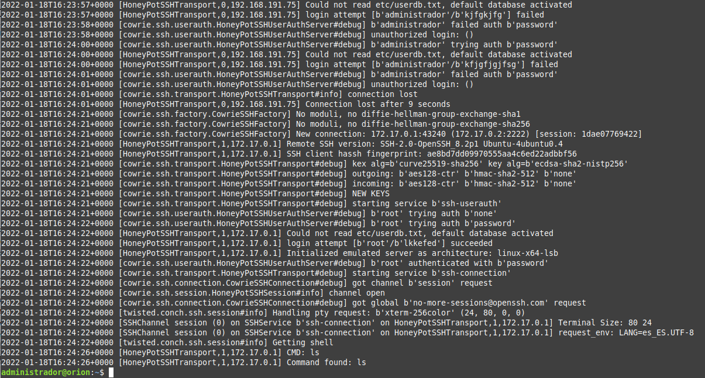
Figura 11. Listar el log del contenedor goofy_hawking.
Para este caso, se puede ver que ha existido un intento de conexión con el usuario y contraseña (Figura 12).
Los pasos siguientes a dar serian el análisis completo de esta información para ver desde que IP se han intentado conectar y comprobar ese equipo, bien por si puede estar infectado con algún tipo de malware o bien porque el usuario está intentando hacer "login".
Más adelante, estos logs se podrán almacenar y visualizar de una forma gráfica gracias a herramientas ELK, desde la que además se podrán ver cuales son las credenciales mas usadas o las IPs desde donde se han recibido los ataques.
NOTA. Para consultar el nombre de los contenedores docker que se tienen funcionando, el comando es el siguiente:
administrador@orion:~$ sudo docker container ls
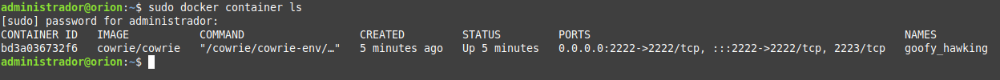
Figura 12. Consulta del listado de contenedores.
4. Honeypot en entorno industrial
En este apartado se describe cómo instalar un honeypot que simulará un entorno industrial y cómo usarlo. Para ello se hará uso de un Ubuntu Server con Docker, en el que se utilizará un contenedor con Conpot, un honeypot adecuado a este caso.
Al ser un entorno industrial, maneja protocolos como modbus, s7com, ipmi, enip o bacnet, además de los típicos http, ftp y snmp.
4.1 Instalación de Conpot y uso básico
Al igual que en el apartado 3, hay que tener instalado docker. Una vez instalado, hay que descargarse la imagen de conpot.
administrador@orion:~$ sudo docker pull honeynet/conpot
| 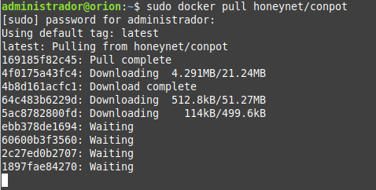 | 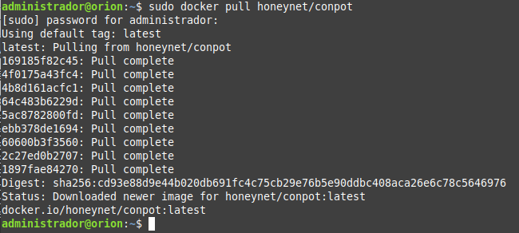 |
| Figura 13. Descarga de la imagen de conpot. | |
Una vez descargada la imagen, hay que arrancar un contenedor de Conpot abriendo los siguientes puertos.
- El puerto 8800 redirigiéndolo al 8080 de nuestra máquina real.
- Para HTTP el puerto 5020 redirigiéndolo al puerto 502 de nuestra máquina real para MODBUS.
- El puerto 2121 en ambos para FTP.
Accediendo al interior del contenedor mediante consola de comandos (-it para que sea interactivo el contenedor), de manera desatendida(-d) e indicándole que la red sea en modo puente(--network=bridge).
Al igual que en el ejemplo práctico del apartado 3 (cowrie) que ya se tenía el puerto correspondiente a SSH abierto y se cambió (puerto 22 por puerto 2222), en este caso se utilizará el puerto 8080 para sustituir al puerto 80, que está actualmente ocupado por el servidor apache.
administrador@orion:~$ sudo docker run -it -p 8080:8800 -p 502:5020 -p 2121:2121/udp -d --network=bridge honeynet/conpot:latest
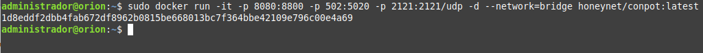
Figura 14. Run conpot.
4.2 Pruebas de funcionamiento
Equipos:
- Windows 10 Enterprise con ip 192.168.191.55.
- Ubuntu Server 20.04: honeypot conpot con ip 192.168.191.96.
A continuación, se realizan pruebas para comprobar el correcto funcionamiento del honeypot. Para ello se utilizará un equipo Windows 10 Enterprise.
Servicio http
Para realizar la prueba del servicio http, se accede mediante un navegador a la IP del servidor Ubuntu mediante el puerto 8080 habilitado.
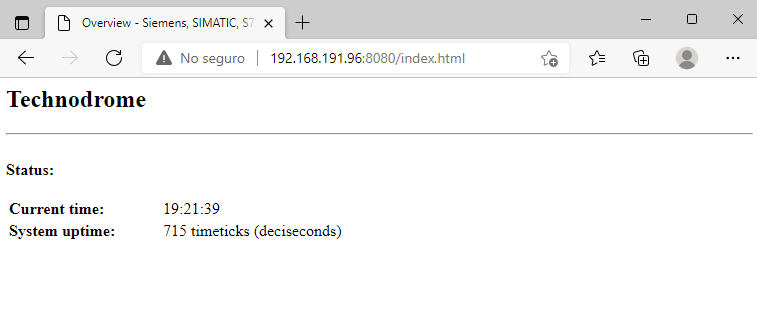
Figura 15. Acceso al servidor web conpot.
Servicio modbus
Para realizar la prueba del servicio modbus se utiliza un cliente modbus llamado SimplyModbusTCPclient. Se puede descargar desde la siguiente página:
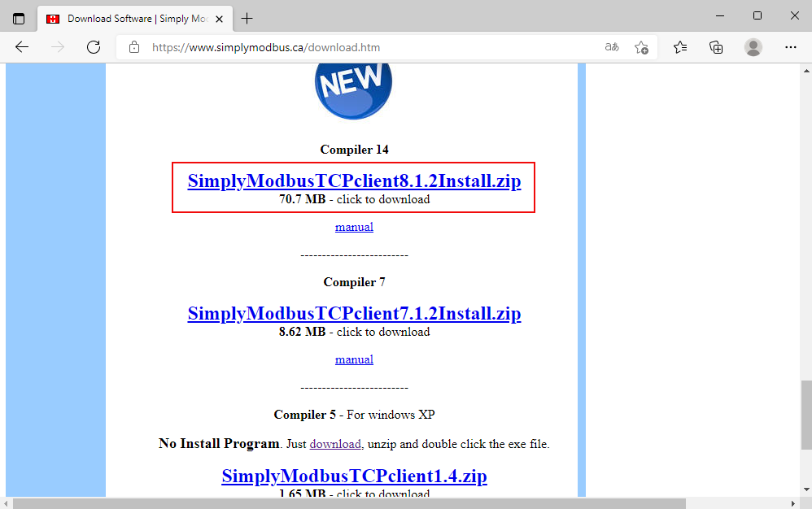
Figura 16. Descarga del cliente modbus.
Una vez se ha completado la descarga, hay que ejecutar el instalador y seleccionar la ruta donde se desea instalar.
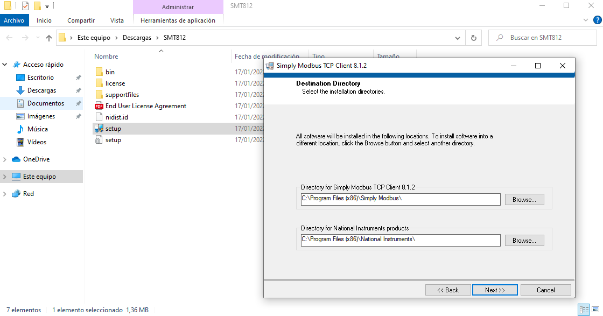
Figura 17. Instalación del cliente modbus.
A continuación, hay que aceptar los términos de licencia y en la siguiente pantalla, no marcar la casilla 'Disable Windows fast startup to prevent problems with installing or removing hardware'.
Una vez finaliza la instalación, si se abre el programa, se puede visualizar la siguiente interfaz, donde hay que indicarle la IP del servidor Ubuntu Server y el puerto 502 previamente habilitado y después, hay que darle al botón connect.
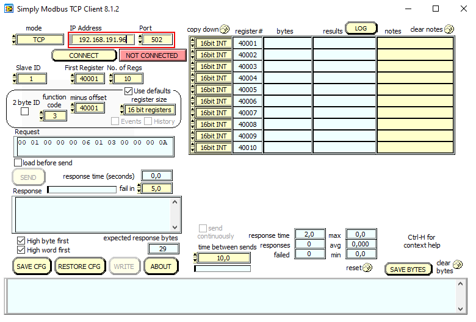
Figura 18. Panel Simply Modbus Client.
Si se pulsa el botón 'CONNECT', se realizará la conexión satisfactoriamente a la máquina industrial ficticia con el servicio modbus.
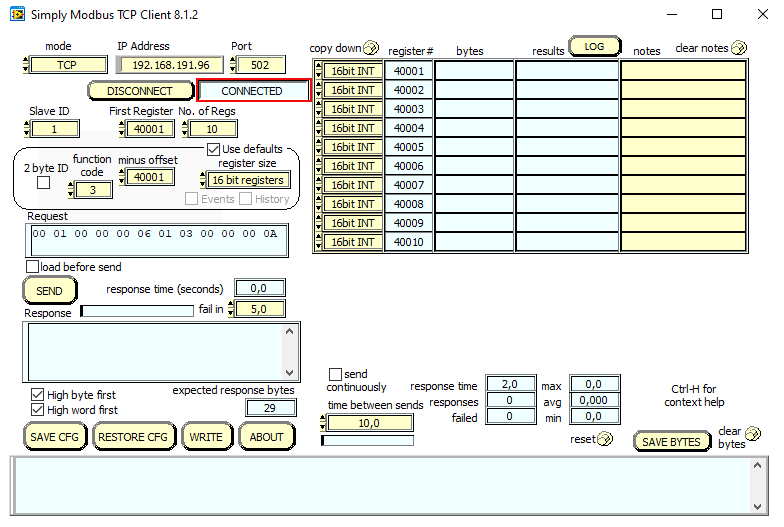
Figura 19. Panel modbus client conectado con el servidor.
Ahora si se accede a los logs del honeypot (exciting_visvesvaraya), se pueden observar las diferentes conexiones que se han realizado.
administrador@orion:~$ sudo docker logs exciting_visvesvaraya
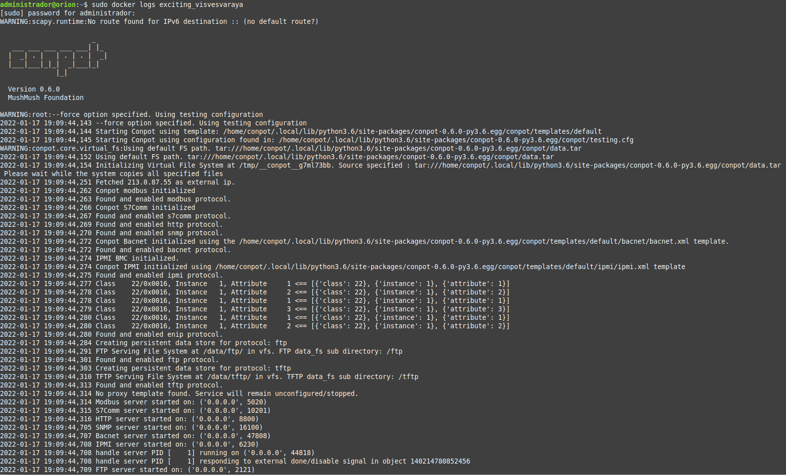
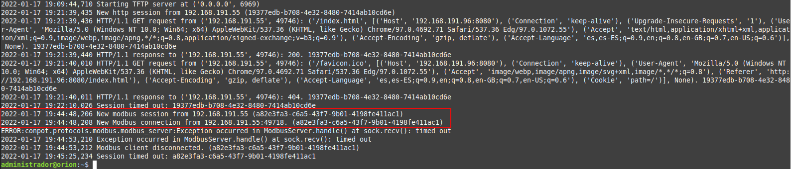
Figura 18. Fichero de log del contenedor exciting_visvesvaraya.
En este caso de ejemplo, se puede ver que ha existido un intento de conexión.
Los pasos siguientes a dar sería el análisis completo de esta información para ver desde que IP se ha intentado conectar y comprobar ese equipo, bien por si puede estar infectado con algún tipo de malware o bien porque el usuario esta intentando hacer "login".
Más adelante estos logs se podrán almacenar y visualizar de una forma gráfica gracias a herramientas como el stack de ELK, desde la que además se podrán ver cuales son las credenciales mas usadas o las IPs desde donde se han recibido los ataques.
Referencias
Obra publicada con Licencia Creative Commons Reconocimiento No comercial Compartir igual 4.0